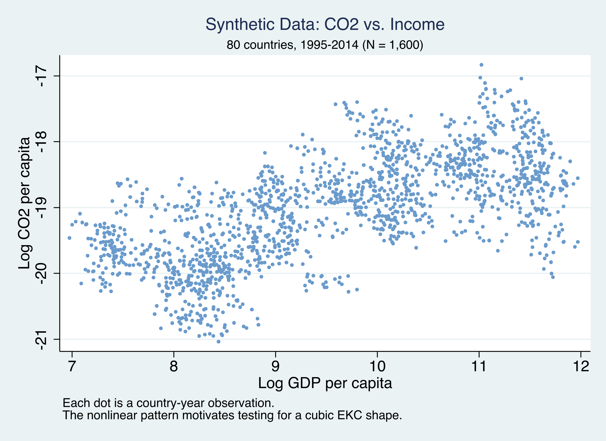
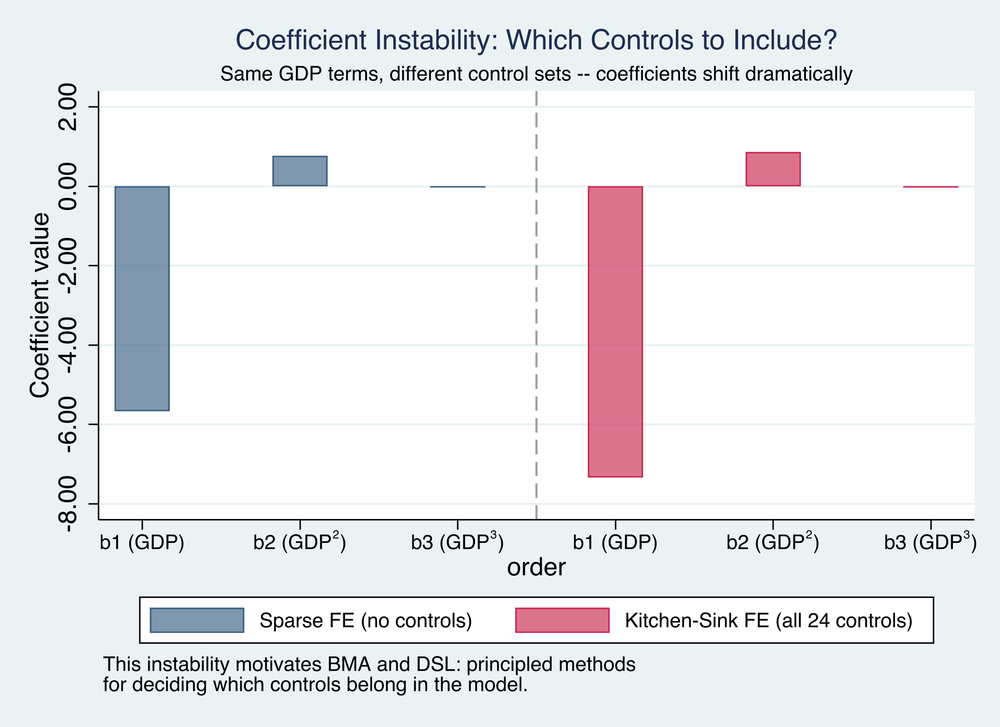
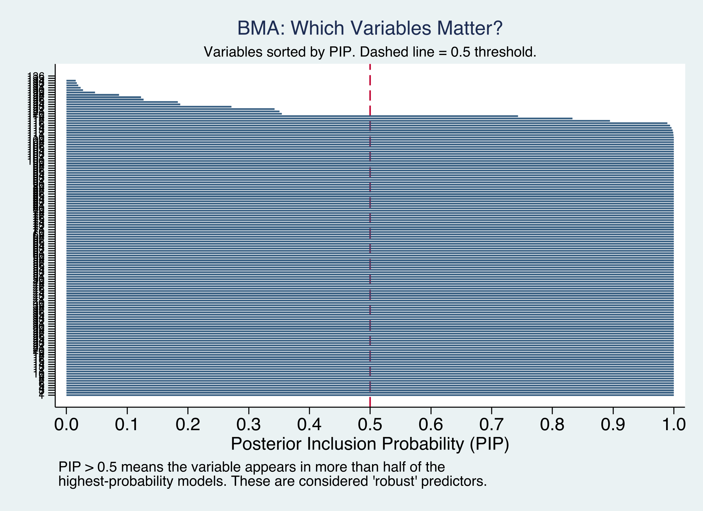
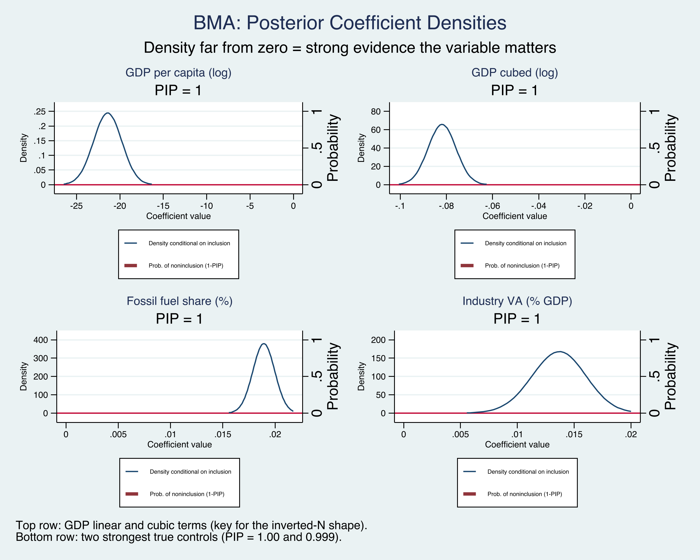
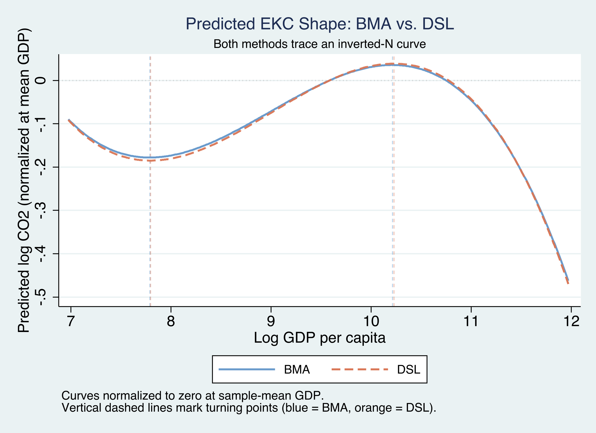
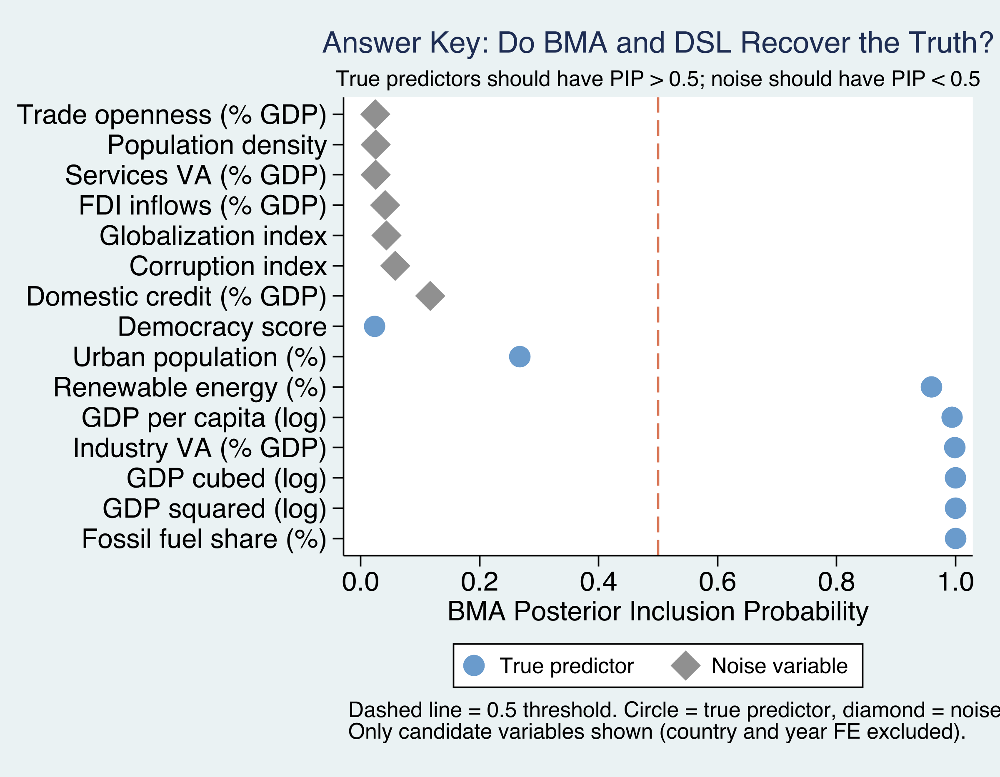

BMA and Double-Selection LASSO with panel data, graded against a known answer key
Nagoya University (GSID)
June 11, 2026
Act I
Does pollution fall as countries get rich? Testing the inverted-N Environmental Kuznets Curve needs a cubic in GDP — and a choice of controls.
With 12 candidates, \(2^{12} = 4{,}096\) regressions are possible. Picking one is a hidden assumption.
| Coefficient | Sparse FE | Kitchen-sink FE | True DGP |
|---|---|---|---|
| \(\beta_1\) (GDP) | −7.498 | −7.131 | −7.100 |
| \(\beta_2\) (GDP\(^2\)) | 0.849 | 0.806 | 0.810 |
| \(\beta_3\) (GDP\(^3\)) | −0.031 | −0.030 | −0.030 |
Same data, same fixed effects — the linear term swings from −7.498 to −7.131 just by adding controls.

Synthetic CO2 vs income: 80 countries, 1995–2014, N = 1,600. The cloud bends — the inverted-N shape the methods must recover.
Act II
fossil_fuel (+0.015)renewable (−0.010)urban (+0.007)democracy (−0.005)industry (+0.010)globalization, services, trade, credit — correlated with GDPpop_density, corruption, fdiFour decoys are deliberately correlated with GDP — they will look “significant” by piggybacking on GDP’s real effect.
\[\ln(\text{CO2})_{it} = \beta_1 \ln G_{it} + \beta_2 (\ln G_{it})^2 + \beta_3 (\ln G_{it})^3 + \mathbf{X}_{it}^{\text{true}}\boldsymbol{\gamma} + \alpha_i + \delta_t + \varepsilon_{it}\]
A cubic in log GDP \(G\) gives the inverted-N; \(\alpha_i\) and \(\delta_t\) absorb country and year heterogeneity; \(\mathbf{X}^{\text{true}}\) is the 5 controls we must rediscover.

GDP polynomial coefficients shift between the sparse and kitchen-sink fixed effects specifications — the visible signature of model uncertainty.
\[P(M_k \mid \text{data}) = \frac{P(\text{data} \mid M_k)\, P(M_k)}{\sum_{l} P(\text{data} \mid M_l)\, P(M_l)}\]
Each model’s weight is its fit (marginal likelihood) times its prior. Better-fitting, parsimonious models earn more weight — BMA’s built-in Occam’s razor.
Instead of betting on one horse, BMA spreads bets across the whole field.
\[\text{PIP}_j = \sum_{k:\, x_j \in M_k} P(M_k \mid \text{data})\]
A variable in every high-probability model has \(\text{PIP} \to 1\); one only in long-shot models stays near 0. We treat \(\text{PIP} \geq 0.80\) as “robust.”
($fe, always) forces country and year FE into every model; groupfv moves the 80 country dummies as one package, not 80 independent choices.
−7.139
BMA posterior mean on \(\beta_1\) · true DGP value −7.100; cubic term −0.030 matches the truth exactly

PIPs for all 15 variables: true predictors (steel blue) clear the 0.80 line; all 7 noise variables (gray) sit near zero.

Posterior coefficient densities for the six PIP > 0.80 variables. Top row: GDP linear, squared, cubic. Bottom: fossil fuel, renewable, industry. All concentrated away from zero.
\[\hat{S} = \hat{S}_Y \cup \hat{S}_{D_1} \cup \hat{S}_{D_2} \cup \hat{S}_{D_3}, \qquad \hat{\boldsymbol{\beta}}^{\text{LASSO}} = \arg\min_{\boldsymbol{\beta}}\ \tfrac{1}{2N}\textstyle\sum_i (y_i - \mathbf{x}_i'\boldsymbol{\beta})^2 + \lambda\sum_j |\beta_j|\]
LASSO on the outcome (\(\hat S_Y\)) and on each GDP term (\(\hat S_{D_k}\)); the union is the safety net; then OLS on that union.
The second selection catches a confounder the outcome-LASSO would miss — that is the “double.”
| Coefficient | DSL (FE) | True DGP | Significant? |
|---|---|---|---|
| \(\beta_1\) (GDP) | −7.433 | −7.100 | yes |
| \(\beta_2\) (GDP\(^2\)) | 0.840 | 0.810 | yes |
| \(\beta_3\) (GDP\(^3\)) | −0.031 | −0.030 | yes |
Cluster-robust SEs, four internal LASSOs, union, then OLS — all in seconds. Wald \(\chi^2 = 53.15\), \(p < 0.001\).
−21.26
Pooled BMA \(\beta_1\) (no FE) · 3× the true −7.100; pooled DSL agrees at −22.03

Predicted EKC curves (normalized at mean GDP): BMA (solid blue) and DSL (dashed orange) are nearly indistinguishable, with closely aligned turning points.
Objection. “BMA and LASSO pick controls automatically — surely that delivers the causal effect of income on emissions.”
Response. No. These are model-uncertainty tools, not identification tools. They tame which controls enter and report honest robustness (PIPs, valid SEs). Identifying a causal EKC still needs the usual assumptions — and the synthetic answer key grades recovery of a known DGP, not a real-world causal claim.
Act III

Answer key: BMA PIPs by ground truth. True predictors (blue circles) cluster above 0.80; noise variables (gray diamonds) cluster below.